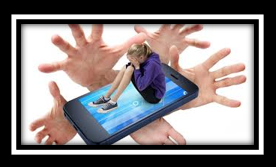
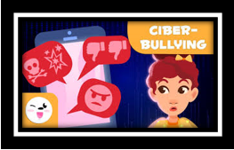
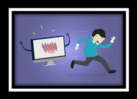
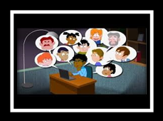

Actualmente mucha gente vive conectada a Internet la mayor parte del día, es algo que se ha convertido en parte de nuestra normalidad. Pero, los adolescentes y algunos niños también pasan muchas horas navegando por webs y, sobre todo, en redes sociales.
Por esto, es vital que enseñemos a los menores a lidiar con estas situaciones y a prevenirlas. En este artículo de unComo.com queremos fomentar la conciencia de esta realidad que para muchos pasa desapercibida y ayudar a evitar problemas como el ciberacoso.
MANERAS DE PREVENCION CONTRA EL CIBERBULLYING
Lo primero que debemos tener en cuenta es saber proteger nuestra información lo mejor posible en la red y enseñar a los menores a proteger su privacidad en Internet en general y dentro de las redes sociales que utilicen. Para ello, te recomendamos que te informes bien sobre cómo proteger tu privacidad en Internet con Firefox y Chrome, así como en tus redes sociales.
Para prevenir el ciberbullying, hay que ser consciente de que no hay que excederse aceptando y enviando invitaciones en las redes sociales. Es algo que se hace mucho por que queremos tener muchos amigos en las redes, pero no es lo más seguro. Por ello, uno de los consejos para prevenir el ciberbullying es que hay que tener presente la importancia de concienciar a los adolescentes de que solo acepten peticiones de amistad de quién ya conozcan de forma externa a Internet
Además, es bueno que bloqueemos a aquellas personas que nos hacen sentir inseguros, sobre todo si ya se ha dado algún problema o se han recibido mensajes desagradables ya sea a través de la red social utilizada o en persona. Si las cosas se ponen complicadas con alguna amistad hasta el punto de que tú no ves claro seguir con ella, no te sientas mal por eliminar y bloquear a esa persona en las redes sociales que tengas, puesto que es una forma de sentirte más tranquilo y de evitar las consecuencias del ciberbullying o ciberacoso.
Uno de los consejos para prevenir el ciberbullying más importantes que hay es que debemos tener mucho cuidado con el contenido que compartimos en las redes, ya sean fotos, vídeos, escritos o páginas webs. Estos pueden crear algún problema o discusión con otro usuario, pero lo más importante es que una vez en Internet tu imagen o vídeo puede llegar hasta gente y lugares insospechados y, por eso, es tan vital el tema de seguridad y privacidad que, por supuesto, debe ir acompañado de un poco de sentido común a la hora de elegir nuestro contenido.
Si en algún momento se crea una discusión con alguien, sobre todo si no conoces de antes a esa persona, lo mejor que puedes hacer para prevenir que la cosa se complique y llegue a ciberbullying u otros tipos de acoso, es ignorar los comentarios, provocaciones y mensajes ofensivos que te pueda enviar o publicaciones en las que te pueda etiquetar, en definitiva, no entrar en la discusión.
Es importante que no hagas por las redes lo que no harías en persona, puesto que a veces nos sentimos más protegidos con el anonimato y/o por la distancia y nos atrevemos con cosas que en realidad no haríamos o diríamos y así nos exponemos a posibles situaciones no deseadas.
Otra cosa que hay que hacer es advertir con educación a la persona que nos acosa de que está cometiendo un delito. Si aún con esto no se detiene el acoso, lo mejor que puedes hacer es reunir pruebas y denunciar la situación a las autoridades y dejar de contestar mensajes a esa persona.
Es realmente importante que no facilites datos personales a nadie y mucho menos a un desconocido. Cuando te pidan a través de una red social el número de cuenta bancaria, tu dirección de casa o de correo electrónico personal, tu número de móvil u otros posibles datos privados, no los indiques ni transmitas nunca, puesto que estarás exponiéndote enormemente a muchos posibles peligros como timos o acosos.
En cuanto empieces a sentirte acosado por Internet lo mejor que puedes hacer es comunicarlo al proveedor del servicio web que estés utilizando. Ellos podrán bloquear, denunciar al usuario en cuestión y así impedirle el contacto contigo a través de su plataforma web.
Hay que tener presente que siempre que creas que la situación ha llegado a un punto que te produce problemas personales o no sabes cómo gestionarla, acudas a un profesional o a las autoridades según veas necesario. Por supuesto, todos estos consejos debemos transmitirlos y enseñarlos a los menores para que desde el primer momento en el que se encuentren en una situación de ciberacoso, sepan cómo actuar y no sigan sufriendo este problema que puede conllevar muchos más.
